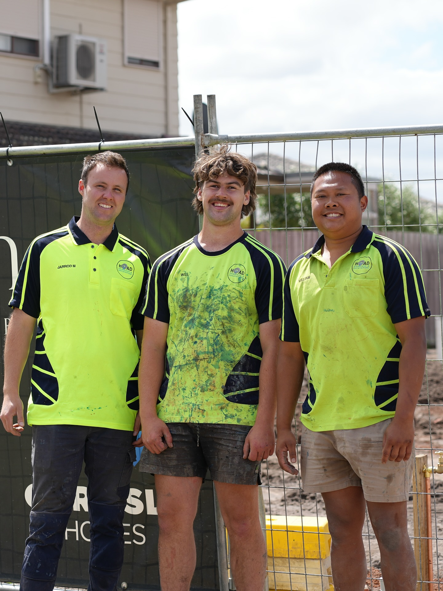

Sewer, Stormwater
& Site Cuts
across the Peninsula
Licensed plumbing and civil drainage for builders, developers, and civil contractors. KDRs, unit developments, and new estate works across the Mornington Peninsula and Greater Melbourne.
What we do
Drainage and earthworks, end to end.
One trade contact for the underground stage of your build. From sewer and stormwater installation through to site preparation and civil work, we keep your program moving without the handover gaps.
-
01
Sewer & Stormwater Drains
Full sewer and stormwater installation for new builds, KDRs and renovations. Tapping into council mains, internal drainage layouts, stack pipework, inspection openings and connections to legal point of discharge.
- VBA notified, certificate of compliance issued
- Plans drafted to Plumbing Code of Australia
- Pre-pour sign-off coordinated with your builder
-
02
Site Cuts
Block preparation for slab pours. Cut and fill, tip-off, retaining batters and bulk removal handled in one mobilisation so the slab crew arrives to a level pad.
-
03
Unit Developments
Multi-dwelling drainage and excavation for townhouses, dual occs and small unit blocks. Phased to suit staged handovers and shared services.
-
04
Civil Works
Estate-scale drainage, kerb and channel preparation, pit installation and bulk earthworks. CCFV-aligned methodology, full pre-start documentation supplied.
-
05
KDR Cap & Seals
Disconnection, capping and sealing of services on demolition sites. Compliant cap-offs, locator marking, and documentation for the next stage of the rebuild.
Recent work
On the tools across the Peninsula.
From inner-city KDRs to Peninsula new builds and rural pads. Every site has its own challenge. Every install gets the same standard.
The crew
Family-run plumbing and civil out of Somerville.
Hoad Drainage & Excavations is a Somerville-based plumbing and civil contractor working across the Mornington Peninsula and Greater Melbourne. We're licensed under the Victorian Building Authority and members of Master Plumbers Australia and the Civil Contractors Federation Victoria.
Builders use us because we treat your program as ours. We turn up when we say we will, we issue the paperwork your inspector wants without being chased, and we'll tell you on day one if something in the plans is going to bite you later.

Where we work
Mornington Peninsula. Bayside. Greater Melbourne.
We're based in Somerville and run regular jobs from Frankston through to Sorrento, and across to the south-eastern Melbourne corridor. If your project sits within roughly an hour of Somerville we'll quote it.
- Somerville
- Frankston
- Mornington
- Mount Eliza
- Rosebud
- Sorrento
- Hastings
- Cranbourne
- Berwick
- Bayside Melbourne
Get in touch
Plans on your desk? Send them through.
The quickest way to a quote is a set of plans or a site address. Call the office, drop us a line on Instagram, or use the form. We'll get back to you the same business day.
- Phone (03) 5978 0120
- Mobile 0402 066 506
- Email jarryd@hoaddrainage.com.au
- Office 5 Arduina Street, Somerville VIC 3912
- Hours Mon to Fri, 6:30am - 5:00pm
Frequently asked
The questions builders ask first.
Short answers to the things that come up before you can write a PO.
Do you work directly with builders and developers?
Yes. Most of our work is sub-trade for builders, civil contractors, and developers across the Mornington Peninsula and south-eastern Melbourne. We're set up for the program-driven pace of a builder's site, and owner-builders are welcome too.
Are you VBA licensed for plumbing?
Yes. We're licensed under the Victorian Building Authority for sewerage and stormwater drainage. We notify the VBA on every job and issue a Certificate of Compliance on completion so it lands in the PIC system for your records.
What is your typical lead time?
It depends on scope and time of year. Residential drainage rough-ins generally book 2-3 weeks ahead. Civil and unit-development work needs longer. Call us in early in your program and we'll hold a slot against your slab date.
Do you supply the drainage plans, or do we?
Either. We can work from plans your hydraulic consultant has already drafted, or for straightforward residential and KDR jobs we'll draft to the Plumbing Code of Australia ourselves and submit them for sign-off.
What suburbs do you cover?
We're based in Somerville and run jobs regularly from Frankston through to Sorrento, and across to the south-eastern Melbourne corridor (Cranbourne, Berwick, Bayside). If your project sits within roughly an hour of Somerville we'll quote it.
Can you handle the excavation as well as the drainage?
Yes. Site cuts, bulk earthworks, civil drainage and KDR cap-and-seal demolition work all come under our remit. One mobilisation, one quote, one set of paperwork. That's the whole point of bringing us in early.
Still chasing an answer? Drop a line or call (03) 5978 0120.